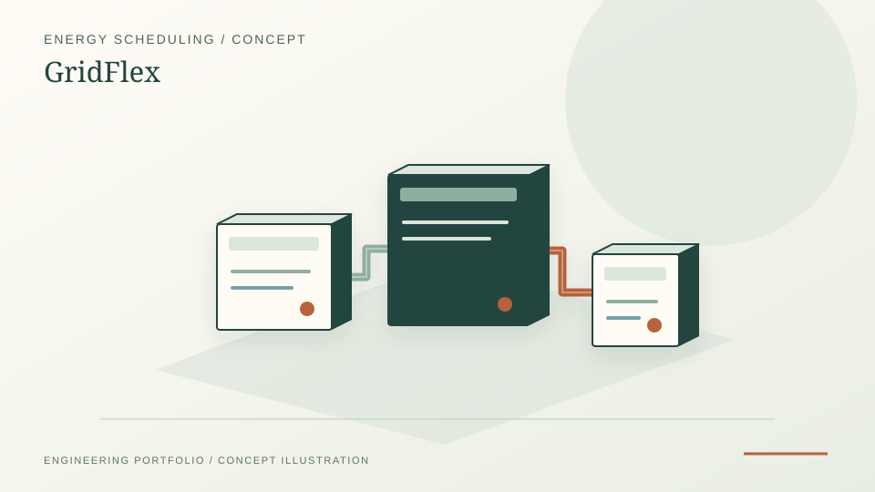

Developed GridFlex as a service for dynamically managing energy storage in renewable-powered solar and wind grids.
Entrepreneurship · Energy storage · ML platform · KTH
GridFlex – ML-Driven Real-Time Energy Storage Optimisation
Entrepreneurship for Engineers assignment: a business concept for a machine-learning platform that dynamically optimises energy storage dispatch in renewable-dominated grids, developed through structured idea generation, SCAMPER analysis, customer interview design, Business Model Canvas and an 87/100 idea screen score.
ML conceptBESSBusiness Model CanvasEnergy storage

PROJECT REFERENCE / GRIDFLEX-ENERGY-OPTIMIZERConcept uses machine learning and real-time data analysis to balance storage output against grid requirements and renewable availability.
Outlined prototype testing with simulated data, customer interviews and predictive weather-aware storage adjustment.
The problem
Renewable energy sources introduce variability that current storage management systems handle poorly. Two specific inefficiencies were identified:
- Renewable curtailment: In the US alone, approximately 5% of generated renewable electricity is curtailed annually — energy produced but not used, representing billions of dollars in lost revenue. Curtailment occurs because storage systems are not dispatched fast enough or intelligently enough to absorb surplus generation.
- Storage misalignment: Without predictive optimisation, up to 30% of stored energy can be wasted due to charging when not needed or discharging when demand is already low. Static or scheduled storage strategies fail to track intraday demand and supply variability.
The core insight: the problem is not storage capacity but storage intelligence. More flexible dispatch — informed by real-time weather, grid demand signals and historical patterns — could resolve both curtailment and misalignment without requiring new hardware investment.
GridFlex concept
GridFlex is a software platform that provides real-time predictive optimisation of energy storage dispatch in solar and wind-dominated grids. Three iterative versions were developed through the assignment:
- v1: Rule-based on/off switching triggered by grid demand thresholds.
- v2: Weather-data-driven pre-emptive storage adjustment using next-day generation forecasts.
- v3 (final): ML model trained on historical grid behaviour, seasonal demand patterns and spot price signals; continuously learns and reoptimises in real time.
Key differentiators versus existing solutions (Fluence Energy, Stem Inc.):
- Multi-technology compatibility: lithium-ion, pumped hydro, thermal storage and flywheel — not locked to a single storage type
- Predictive rather than reactive: weather and grid forecasts drive pre-emptive charging/discharging decisions
- Operator-accessible dashboard: visualisations of storage levels, projected demand and optimisation insights designed for non-specialist grid operators
Idea screen results
Overall: 87 / 100Idea 17 · Industry 19 · Market 18 · Founder 16 · Financial 17
Industry score: 19 / 25Highest sub-score — storage CAGR 20%, government renewable mandates
Market: $120B by 2030Storage market; renewables CAGR ~10%
Industry scored highest (19/25) driven by renewable integration mandates, storage CAGR of ~20% and improving ML/IoT infrastructure. Founder scored lowest (16/25), reflecting an acknowledged gap in business development and financial planning expertise — identified as the primary reason for seeking a complementary co-founder.
Business model canvas
- Value propositions: Real-time ML storage optimisation; operational cost savings through reduced fossil fuel backup; compatibility with diverse storage types
- Customer segments: Renewable energy providers (solar/wind farms), utility companies, smart grid operators
- Revenue streams: SaaS subscription (primary); premium analytics add-on; one-time installation and integration fees
- Key partners: Renewable energy suppliers, grid operators, IoT device and cloud infrastructure providers
- Key activities: R&D on optimisation algorithms, continuous data collection and model retraining, customer support and onboarding
- Key resources: ML platform, weather and grid data feeds, energy engineering and data science team
- Cost structure: Software development/maintenance, data acquisition, customer support, marketing/trade events
Primary risks
- Technical: Real-time ML optimisation at grid scale requires low-latency infrastructure; latency spikes could cause suboptimal dispatch decisions
- Market adoption: Traditional grid operators may resist AI-driven dispatch, preferring rule-based systems they can audit and explain to regulators
- Regulatory: Grid management is highly regulated; compatibility with market participation rules varies by country and changes frequently
- Competition: Fluence and Stem have existing utility relationships and proven track records; GridFlex would need to differentiate on flexibility and cross-storage compatibility to win pilots
Relevance
What this demonstrates
GridFlex demonstrates the ability to frame a technical energy-systems problem as a business proposition: quantifying the market pain (5% curtailment, 30% storage waste), identifying the specific technical capability that addresses it (predictive ML dispatch), and mapping that capability to a defensible business model. The SCAMPER ideation, three-version iteration and competitive analysis show structured entrepreneurial reasoning rather than a high-level idea sketch.
The domain knowledge underpinning GridFlex — storage dispatch optimisation, renewable intermittency, grid balancing — directly connects to the technical work in PyPSA-NL, PyNEXUS and the district heating optimisation projects. GridFlex represents what that technical work looks like when translated into a product and market context.